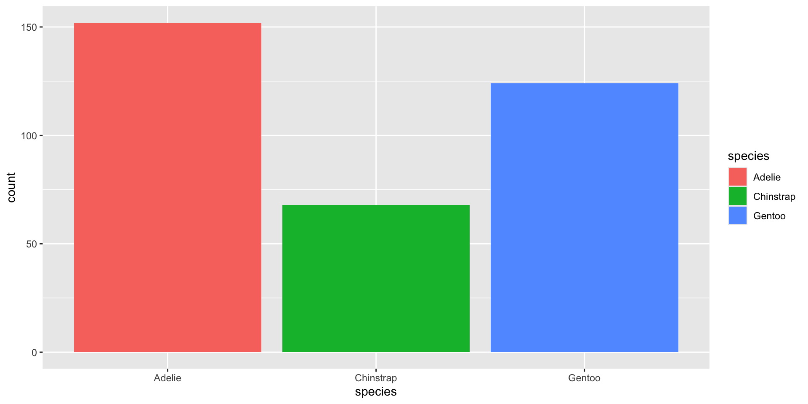

[1] 4Data Visualisation with R
Session 1 · Getting Started — R, RStudio & Your First Plot
SARA Institute of Data Science
2026-07-21
Welcome!
- This is a hands-on workshop. Please have RStudio open in front of you.
- No prior coding experience is assumed. We start from zero.
- Three sessions, ~90 minutes each:
- Getting Started — R, RStudio, your first plot
- Grammar of Graphics — aesthetics, geoms, facets
- Polishing & Publishing — labels, themes, saving your work
- Today’s motto: you will make a real plot in the first 30 minutes.
Why data visualisation?
- A good chart answers a question faster than a table of numbers ever could
- As researchers, we visualise to:
- explore data and spot patterns/errors
- explain findings to others (papers, viva, funders, community)
- R +
ggplot2is one of the most widely used tools for this in research, government, and industry worldwide
Goal for today: understand why a plot looks the way it does, not just copy-paste code.
Session 1 roadmap
| Time | Topic |
|---|---|
| 0–10 min | What is R? What is RStudio? |
| 10–25 min | Panes tour + first R commands |
| 25–40 min | Packages, loading data, exploring penguins |
| 40–55 min | The Grammar of Graphics + first scatter plot |
| 55–75 min | Aesthetics: colour, and bar charts |
| 75–90 min | Your Turn practice + wrap-up |
What is R? What is RStudio?
R vs RStudio — an analogy
R
- The engine — the actual programming language
- Free and open-source
- Does all the actual computing
RStudio
- The car built around the engine
- A friendly interface (IDE) to write and run R code
- Also free and open-source
You always need R installed first, then RStudio on top of it. You will never open “R” directly — you always work through RStudio.
A tour of RStudio
When you open RStudio you will usually see four panes:
- Source (top-left) — where you write and save your code (a script,
.Ror.qmdfile) - Console (bottom-left) — where code actually runs, one line at a time
- Environment / History (top-right) — shows objects you’ve created (data, variables)
- Files / Plots / Packages / Help (bottom-right) — file browser, and this is where your plots will appear!
Golden rule: always write your code in the Script, not directly in the Console. The script is saved; the console is not.
Your very first R commands
Type these into the Console and press Enter after each line:
R is a calculator, a text-handler, and — very soon — a plotting machine, all at once.
Creating objects with <-
In R, we store things using the assignment arrow <- (shortcut: Alt + -)
Think of <- as “put this value into this box, and name the box.” You can reuse the box (object) any time by typing its name.
A note on scripts vs .qmd files
- A plain R script (
.R) runs code top to bottom - A Quarto document (
.qmd) — like the one this workshop is built in! — mixes writing and code together, and can produce slides, reports, PDFs, or websites - Code lives inside “chunks”:
For this workshop, a simple R Script (File → New File → R Script) is all you need. We’ll use .qmd later if time allows.
Packages, and Meeting Our Data
What is a “package”?
- Base R can do a lot, but packages add extra tools written by the R community
- Install a package once per computer:
- Then load it every time you start a new R session:
install.packages() = buying the toolbox. library() = opening the toolbox on your desk today.
Meet the tidyverse
tidyverse is not one package — it’s a collection of packages that work well together, including:
ggplot2— for data visualisation (our focus!)dplyr— for filtering/summarising datareadr— for reading in data files (CSV etc.)
Loading tidyverse loads all of these together, so we only need one library() line.
Meet the data: palmerpenguins
- A free, beginner-friendly dataset of 344 penguins from three species, collected near Palmer Station, Antarctica
- Comes bundled inside the
palmerpenguinspackage — no file to download! - Variables include:
| Variable | Meaning |
|---|---|
species |
Adelie, Chinstrap, or Gentoo |
island |
Biscoe, Dream, or Torgersen |
bill_length_mm / bill_depth_mm |
beak size |
flipper_length_mm |
flipper size |
body_mass_g |
weight in grams |
sex, year |
sex and year recorded |
Loading and looking at the data
# A tibble: 6 × 8
species island bill_length_mm bill_depth_mm flipper_length_mm body_mass_g
<fct> <fct> <dbl> <dbl> <int> <int>
1 Adelie Torgersen 39.1 18.7 181 3750
2 Adelie Torgersen 39.5 17.4 186 3800
3 Adelie Torgersen 40.3 18 195 3250
4 Adelie Torgersen NA NA NA NA
5 Adelie Torgersen 36.7 19.3 193 3450
6 Adelie Torgersen 39.3 20.6 190 3650
# ℹ 2 more variables: sex <fct>, year <int>Rows: 344
Columns: 8
$ species <fct> Adelie, Adelie, Adelie, Adelie, Adelie, Adelie, Adel…
$ island <fct> Torgersen, Torgersen, Torgersen, Torgersen, Torgerse…
$ bill_length_mm <dbl> 39.1, 39.5, 40.3, NA, 36.7, 39.3, 38.9, 39.2, 34.1, …
$ bill_depth_mm <dbl> 18.7, 17.4, 18.0, NA, 19.3, 20.6, 17.8, 19.6, 18.1, …
$ flipper_length_mm <int> 181, 186, 195, NA, 193, 190, 181, 195, 193, 190, 186…
$ body_mass_g <int> 3750, 3800, 3250, NA, 3450, 3650, 3625, 4675, 3475, …
$ sex <fct> male, female, female, NA, female, male, female, male…
$ year <int> 2007, 2007, 2007, 2007, 2007, 2007, 2007, 2007, 2007…Quick exploration commands
Min. 1st Qu. Median Mean 3rd Qu. Max. NAs
2700 3550 4050 4202 4750 6300 2 Note the $ sign — penguins$body_mass_g means “go into the penguins table and pull out the body_mass_g column.”
Your Turn 1 (5 min)
- Load the
penguinsdata (if not already loaded) - Use
str()onpenguins— how is it different fromglimpse()? - Find the summary of
flipper_length_mmusingsummary()
Answer
tibble [344 × 8] (S3: tbl_df/tbl/data.frame)
$ species : Factor w/ 3 levels "Adelie","Chinstrap",..: 1 1 1 1 1 1 1 1 1 1 ...
$ island : Factor w/ 3 levels "Biscoe","Dream",..: 3 3 3 3 3 3 3 3 3 3 ...
$ bill_length_mm : num [1:344] 39.1 39.5 40.3 NA 36.7 39.3 38.9 39.2 34.1 42 ...
$ bill_depth_mm : num [1:344] 18.7 17.4 18 NA 19.3 20.6 17.8 19.6 18.1 20.2 ...
$ flipper_length_mm: int [1:344] 181 186 195 NA 193 190 181 195 193 190 ...
$ body_mass_g : int [1:344] 3750 3800 3250 NA 3450 3650 3625 4675 3475 4250 ...
$ sex : Factor w/ 2 levels "female","male": 2 1 1 NA 1 2 1 2 NA NA ...
$ year : int [1:344] 2007 2007 2007 2007 2007 2007 2007 2007 2007 2007 ... Min. 1st Qu. Median Mean 3rd Qu. Max. NAs
172.0 190.0 197.0 200.9 213.0 231.0 2 str() and glimpse() show similar info; glimpse() (from dplyr) is usually easier to read because it prints one variable per line.
The Grammar of Graphics
The big idea behind ggplot2
“gg” stands for Grammar of Graphics — every plot is built from the same simple layers:
- Data — which data frame?
- Aesthetics (
aes) — which columns map to x, y, colour, size…? - Geometry (
geom) — what type of plot? points, bars, lines… - (later: facets, themes, labels, scales)
Once you know this grammar, you can build almost any chart by combining the same small set of building blocks.
Your first plot — a scatter plot

Breaking that down, line by line
ggplot(data = penguins, # 1. which data?
aes(x = flipper_length_mm, y = body_mass_g)) +# 2. what maps to x/y?
geom_point() # 3. draw it as pointsggplot()starts the plot and sets up the “canvas”aes()= aesthetic mapping — connects data columns to visual properties+adds a layer — geoms are always added with+, never a commageom_point()says: “draw one point per row of data”
Common beginner mistake: putting + at the start of a new line instead of the end of the previous line. R needs the + at the end to know more is coming!
Your Turn 2 (7 min)
Make a scatter plot of bill_length_mm (x-axis) against bill_depth_mm (y-axis) using the penguins data.
Hint: copy the previous code and change the column names.
Adding colour by species

Mystery solved — the three “clusters” are actually the three penguin species! This is the power of mapping a variable to color inside aes().
aes() outside vs inside geom_point()
Both give the same result here — but Option B is useful once we start layering multiple geoms (Session 2!).
Your Turn 3 (7 min)
Make a scatter plot of flipper_length_mm vs body_mass_g, colouring the points by island instead of species.
Bar Charts — Counting Categories
When to use a bar chart
- Scatter plots need two numeric variables
- When you want to count how many rows fall into each category, use
geom_bar()

Notice: we only supplied one aesthetic (x). geom_bar() automatically counts rows for us — we didn’t need to calculate counts ourselves!
Colouring bars

For bars/areas we usually use fill (the inside colour) rather than color (the outline colour). Try swapping fill for color above and see the difference!
Your Turn 4 (8 min)
- Make a bar chart showing how many penguins were recorded on each
island - Fill the bars by
species— what do you notice about which species live on which islands?
Recap — Session 1
- R is the engine, RStudio is the dashboard
<-stores values in named objectsinstall.packages()once,library()every sessionpenguinsfrompalmerpenguinsis our practice dataset all workshop- Every
ggplot2plot = data + aes + geom, joined with+ geom_point()→ scatter plots (two numeric variables)geom_bar()→ counts of a categorical variablecolor/fillinsideaes()map a variable to colour
Before Session 2
Practice at home (10 min):
Bring any error messages you get — we will debug them together in Session 2!
Next session: aesthetics deep-dive (size, shape, transparency), histograms, boxplots, density plots, and facets — splitting one plot into a grid of small multiples.
Thank you!
Session 1 complete 🎉
Questions? Errors on your screen? Raise your hand — we fix them together, not alone.
SARA Institute of Data Science — building open, first-generation, Ambedkarite research capacity, one dataset at a time.
SARA Institute of Data Science · R for Researchers